故事與世界觀
三百年前，繁盛的瑟蘭王國在一夜之間沉入地底。國王瓦爾克陷入永恆的沉睡，他最忠誠的三位騎士團長發誓守護封印，直到有人能讓王真正安息。
如今，冒險者公會在廢墟入口搭起了冒險者營地。由老嚮導 帶路，你將一塊一塊打通崩塌的迷宮，深入王國的核心。
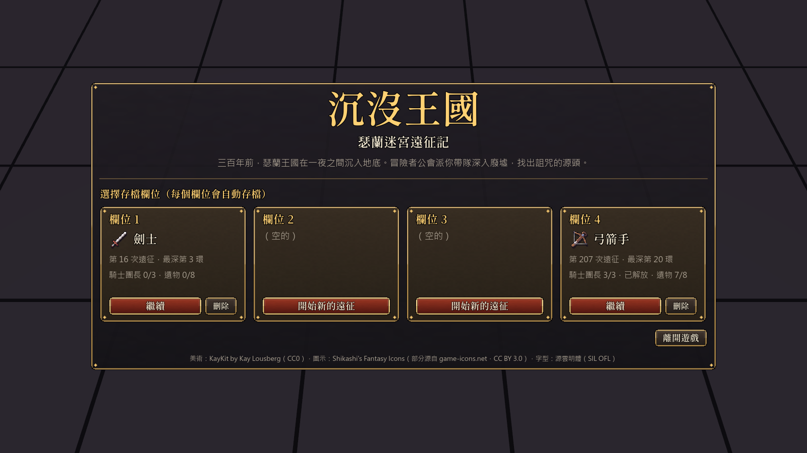
三百年前，繁盛的瑟蘭王國在一夜之間沉入地底。國王瓦爾克陷入永恆的沉睡，他最忠誠的三位騎士團長發誓守護封印，直到有人能讓王真正安息。
如今，冒險者公會在廢墟入口搭起了冒險者營地。由老嚮導 帶路，你將一塊一塊打通崩塌的迷宮，深入王國的核心。
這是一款「蓋迷宮 × 自動冒險」遊戲：你負責規劃道路，冒險者自己去闖。每一輪都會變強一點，一路從營地打到王座。
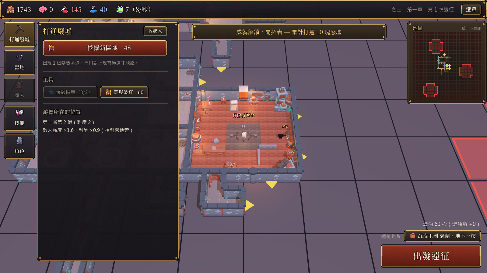
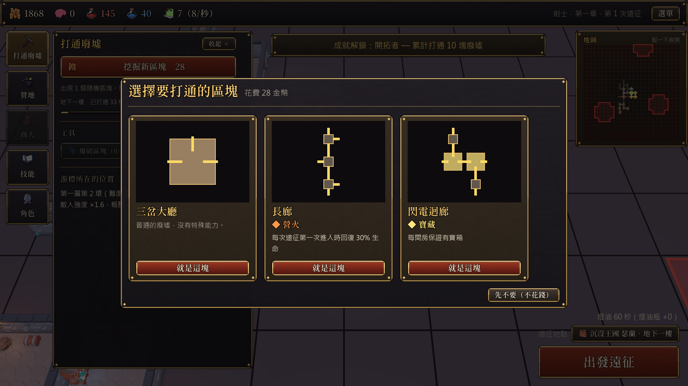
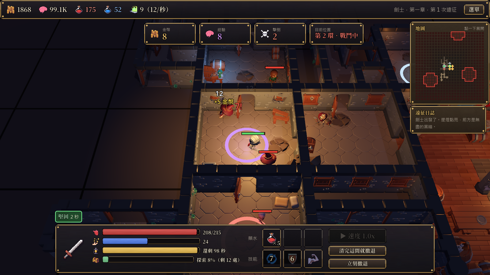
| 動作 | 操作 |
|---|---|
| 收起打通廢墟視窗 | 視窗上的「收起 ✕」，再點左邊「打通廢墟」打開 |
| 移動鏡頭 | WASD／方向鍵，或按住左鍵拖曳（遠征中鏡頭鎖定冒險者） |
| 縮放／旋轉視角 | 滑鼠滾輪／Q、E |
| 放置區塊 | 左鍵放下，右鍵或 R 旋轉，Esc 取消（退款） |
| 關閉視窗 | 點「關閉」、按 Esc，或點視窗外面 |
| 確認對話框 | Enter 或點「是」 |
| 裝備 | 滑鼠停留立即比較；雙擊或拖到身上裝備；右鍵賣出；拖到共通儲藏箱保存（所有存檔共用）；「批量賣出」一次勾選多件 |
| 符文 | 符文袋依 1～30 號排好；點符文看能力、合成；拖到裝備上鑲嵌；花金幣可取下 |
| 遠征地點 | 右下角的「遠征地點」按鈕（或「選單 → 世界地圖」）打開世界地圖，點亮著的地點，再選從哪一層出發 |
| 滑鼠滾輪 | 滑鼠在任何視窗或面板上時，滾輪只捲動那個視窗，背景的大廳不會跟著動 |
| 主動技能 | 「角色 → 技能」分頁，把學會的主動技能放進技能欄（最多 3 個），戰鬥中自動施放 |
| 遠征速度 | 一開始只有 1 倍速（＝現實時間）。在技能樹「冒險」學會急行軍後，HUD 的「速度」按鈕可以加速：1 級 2x（200 經驗）、2 級 3x（500）、3 級 4x（1500）、4 級 5x（3000），會記住上次的設定；還沒學會時按鈕是灰色的 |
| 藥水與技能 | 遠征畫面下方有 3 格藥水欄（點紅藥水可以立刻喝）和 3 格技能欄（顯示冷卻秒數） |
| 地圖 | 右上角小地圖，點一下展開成完整的平面圖（第二章開放後有三層） |
| 無盡秘境 | 打倒沉睡之王後，左邊功能列多一個「秘境」，或點營地東南角的傳送門 |
| 存檔 | 4 個欄位，自動存檔；每個職業可以各開一個。前 3 個欄位共用一個共通儲藏箱 |
| 音樂與音效 | 營地、地城探索、摸黑、頭目戰各有一首很輕的背景音樂；攻擊、受傷、怪物倒下、寶箱、藥水、陷阱、蓋區塊、學技能都有音效。「選單 → 設定」可以分別調背景音樂和音效的音量 |
目前有劍士、弓箭手、法師三個職業，盜賊即將登場。所有職業共用同一套技能樹，差別只在起始數值與能穿的裝備：每件裝備會標示「通用」或「某職業專用」，任何職業都打得到所有裝備，撿到別的職業的裝備會顯示職業不符，可以放進共通儲藏箱給其他存檔用。
每次挖掘會隨機抽出區塊（技能「勘查」可以一次看到更多塊再挑），價格每一層樓各算各的：照畫面目前看著的那一層計價（放到別層會多退少補），只看那一層已經蓋了幾塊。
價格是照「這一層蓋了幾塊」算，不是照格數算。區塊有 1～4 格：照出現機率，1 格佔 48%、2 格 17%、3 格 22%、4 格 13%，平均一塊約 2 格；不管抽到幾格的區塊，同一塊的價格都一樣，所以抽到大區塊等於賺到。
三段的塊數怎麼對應地圖：營地在每層正中央，第 1～3 環共 48 格（約 25 塊），第 1～5 環共 120 格（約 50～60 塊）。所以「前期 25 塊」大約就是把營地周圍 3 環蓋滿，「中期到第 50 塊」大約是蓋到第 5 環，之後才是後期。地下一樓第 5 環以後敵人也開始明顯變強，價格和難度一起轉換。
所有樓層共用同一條曲線，每一層只設定自己的起始價（第 1 塊）。之後的章節新增樓層，也只要給一個起始價，就沿用同一條曲線。
縱軸是對數刻度（每往上一格價格乘 10），所以三段曲線的「斜率」就是漲幅：前期最陡、中期變緩、後期最平。
遊戲裡不會事先告訴你：任何一層打通的格子達到 90%，就會跳出「隱藏獎勵！」並永久獲得那一層的加成。每層只給一次，之後用爆破符炸掉幾格掉回 90% 以下也不會收回。舊存檔如果早就蓋到九成，讀檔時會直接補上。之後的章節每多一層，就會多一個隱藏獎勵。
提醒：照現在的區塊價格，地下一、二樓在第一章後段就有機會蓋到九成；地下三樓蓋到九成時一塊要十幾萬金幣，是留給之後章節回頭挑戰的目標。
區塊有不同的形狀與門口，至少要有一個門口對上現有通道才能放。黃色箭頭代表「這裡還能往外接」。
區塊大小從 1 格到 4 格都有：直走廊、轉角、丁字、十字、L 形、閃電形、方形大廳……房間（大格）會有敵人與寶箱，走廊（細格）通常比較安全。
一般區塊有機會附帶特殊能力（地圖上用顏色標示）：
擊敗第一位騎士團長後才會出現在抽選池裡。
地標一開始就藏在地圖上，打通到附近時會顯示「？」。騎士團長和沉睡之王的大致位置一開始就會用發光的範圍標出來（實際位置會偏移 0～2 格）；通往地下二樓的階梯要等你打通到附近（4 格內）才會出現藍色範圍（階梯在第 11 環，比較遠）。範圍只會鋪在還沒打通的空地上，不會蓋到已經建好的區塊。
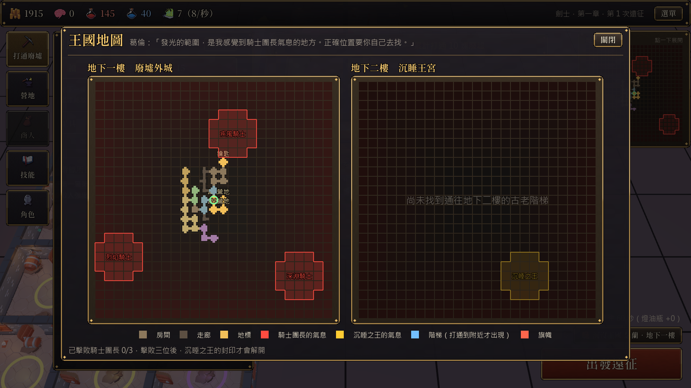
每一層樓都有自己的營地（地下一樓是冒險者營地，其他樓層是樓梯口旁的營地）。出發前點右下角的「遠征地點」打開世界地圖選一層，冒險者就從那層的營地出發，只在那一層探索，清完就平安回營，不會跑到別層。一開始只有地下一樓；冒險者走到通往下一層的樓梯時，那一層才會開放（下次遠征就能選）。打倒沉睡之王後會開放地下三樓。
參考 Dungeon Buster 的節奏：冒險者走進房間之後才會看到裡面的怪物，怪物也是這時才發現冒險者（頭上會冒出紅色的「！」），雙方停頓一下才開打；第一次走進沒有怪的房間也會稍微停一下觀察四周。所以就算開到高倍速，也不會邊走邊打、隔著牆射擊。停下來觀察的時候不消耗燈油。
出發後直接走出營地，只去還有事可做的房間：有怪物、寶箱、聖泉、營火、燈台、鑰匙或還沒帶回營地的流浪商人（商人最優先）。已經清空的房間只會路過，不會特地繞過去。選路時近的優先、稍微偏向內環，所以會由內往外一路推進，不會來回亂跑。插了旗幟的地方最優先；鑰匙、寶庫會稍微優先。頭目房排在附近的房間後面：先把路上的怪清掉、東西撿完再去挑戰，而且生命低於 60% 時不會去挑戰頭目（插旗指定的除外）。全部清完就自己平安回營。
畫面下方的探索進度條顯示這趟還剩幾處要去，燈油條顯示還能撐幾秒。
出發時點亮提燈，冒險者周圍有一圈暖光，其他地方昏暗。燈油每秒消耗（1 倍速下，1 秒燈油＝現實 1 秒），越少光圈越小。剛創角色有 60 秒燈油，靠技能、營地充電座、裝備詞綴慢慢加長；燒完時不用選擇，冒險者會直接摸黑繼續探索：命中和傷害 −35%（技能「夜行者」「夜明燈」可以減輕），提燈只剩微光。摸黑時不會去挑戰頭目，也不會再往更深的環走；生命低於 70% 時會自動帶著戰利品撤退。有燈油的時候，如果生命低於 30% 又沒有紅藥水了，也會先撤退，不硬撐到倒下。如果打了 30 秒，敵人的血幾乎沒減少（打不動），也會撤退；頭目戰打很久沒關係，只要還在穩定扣血就會繼續打（打在召喚小兵身上的傷害不算）。頭目召喚出來的小兵不給金幣和經驗。
怪物平常散在房間各處，冒險者闖進來後，近戰的怪會圍上來、會法術的怪保持幾步距離，頭目站在原地等冒險者過去；近戰職業會走到最近的怪旁邊打，遠程職業留在門口附近射擊。1 倍速＝現實時間：燈油 60 秒就是現實 60 秒，攻擊間隔 1.0 秒就是一秒打一下（攻擊速度越高打得越快）。生命回復、流血、中毒、燃燒都是每秒結算一次，血條不會一直跳動；每秒回的血會在冒險者頭上跳出綠色的「+數字」，跳出來的紅色傷害就是實際扣掉的生命。冒險者身上的狀態（流血、急速、虛弱、摸黑…）會排在畫面下方角色資訊框的正上方，寫著層數和剩幾秒，滑鼠移上去可以看說明。一般怪物大約十下以內就能打倒。
可以隨時「清完這間就撤退」或「立刻撤退」，收穫全數帶回。倒下的話金幣和經驗少一半（冒險技能「保命符咒」每級少損失 3%，點滿只損失 20%），但這趟撿到的裝備、符文、配方、收藏品、遺物都會帶回來。
學會冒險技能「持續遠征」後，出發遠征之後，遠征介面右下角會出現「自動：開／關」和「自動設定」。打開後，這趟結束會自動再出發。按「清完這間就撤退」或「立刻撤退」會同時關掉自動遠征，主動回營不會被強迫再出發。
自動設定：
設定會跟著存檔記住；回到標題或打倒章節頭目時，自動遠征會自動關掉。
流浪商人在地下一樓第 5 環擺攤。冒險者遇到他之後會聊幾句，商人就跟著冒險者回營地，在營地東邊擺攤，營地多出「商人」分頁。他原本的攤位變成普通房間，之後會有怪物住進去。
離營地越遠（環數越大）敵人越強、報酬越高。地下二樓第 1 環＝地下一樓第 11 環的強度，越往外越強，沉睡之王大約在第 10 環；地下三樓從第 22 環起跳，共 16 環。
靠近營地的敵人比較弱（第 0 環只有 70% 強度），報酬也有加成。大約 15～25 次遠征就能打到第 5 環，熟悉建造、技能、裝備。
前期加成看的是「你目前打到的最深環數」：深入之後，內圈就沒有加成了，所以越外圈報酬越多，不會出現回頭刷內圈最划算的情況。
學會「持續遠征」後可以讓遊戲自己跑。這時敵人每環成長得更快、報酬成長變慢，打倒三位騎士團長是主要的挑戰，不會掛機一下就通關。
平衡機器人（每個職業 16 張地圖）的中位數：第一章 1 倍速約 15 小時、第二章約 17～25 小時，兩章合計約 33～39 小時（3 倍速約 11～13 小時）。卡關時多農幾趟經驗、金幣，或刷新商人的貨架找裝備，都能慢慢突破。
每連續倒下一次，下次遠征的攻擊、生命 +4%（最多 10 層、+40%）。打倒騎士團長或沉睡之王會清空，平安歸來每次消退 2 層。卡關越久越容易突破，不會無限輪迴。
如果連續兩趟都倒在頭目房，接下來 3 趟冒險者會避開頭目房，先在好打的房間練功、存錢變強，畫面會顯示提示。第二章還有另一條規則：連續兩趟一出發就倒下（只打倒 0～6 隻怪）也算，避開 4 趟，而且從營地出發。另外，會替同伴回血的敵人只要戰鬥拖過 20 秒就補不動了，不會出現永遠打不完的戰鬥。
閃避最多 50%、魔法抵抗最多 35%（對騎士團長、國王、祭司只算一半）。到了上限再加也沒有效果，這時候改堆生命、攻擊，或「受到的魔法傷害 −%」這類減傷更划算。魔法攻擊不吃護甲。
騎士團長每 4 次攻擊、沉睡之王每 3 次攻擊有一次重擊，無法閃避。兩者都是不死的騎士，流血、中毒、燃燒對他們只有 60% 效果。
有時候遠征會遇到異變的敵人，更強，但會掉落特定的符文。
擊敗三位騎士團長，解開封印後，才能挑戰王座廳的沉睡之王。擊敗騎士團長的數量也會解鎖更強的技能。
三位騎士團長分別守在第 6、8、10 環。
瓦爾克倒下的那一刻，王座底下傳來更深的回響。原來國王不是詛咒的元凶，而是封印：三百年前，地底醒來的是一條古龍，瓦爾克用自己的長眠把牠封在王座之下，並讓四位元素祭司看守。如今國王安息了，封印正在崩塌。
王座廳出現往下的階梯，通往更大的地下三樓（16 環，比前兩層都大）。這裡有 16 種全新的怪物，難度從第 22 環開始。
地下三樓營地：打倒沉睡之王後，王座底下的階梯打開，公會在地下三樓的樓梯口搭好營地。出發前在「遠征樓層」選地下三樓就從那裡出發。
新機制：死後分裂的史萊姆、死亡時爆炸的骷髏頭、會替同伴回血的古樹、留下毒霧的蘑菇、會召喚浮空骷顱的深淵古神……另有 3 間封印寶庫與 2 把鑰匙。
風、水、地、火四位祭司分別守在第 8、10、12、14 環。四位都倒下後，古龍 伊格尼斯會在第 13 環以外隨機一處還沒探險過的地方降臨（如果都打通了，就挑一間已打通的房間）。
第二章的通關長度大約是第一章的 1.1～1.8 倍（不含秘境）。後段有不少魔法怪：弓箭手靠閃避、法師靠魔法屏障，劍士靠舉盾（護甲也能擋一半效果的魔法）和聖盾守護。
武器新增星隕、古龍品階；護甲新增星辰、龍鱗品階。
鐵壁聖騎（力量）、疾風遊俠（敏捷）、星辰法師（智力）只會在第二章出現。
每棵技能樹都有打倒祭司才能學的技能（700 經驗起跳）：力量「聖盾守護」「屠龍之力」、敏捷「鷹擊」「颶風之眼」「命運編織」、智力「星辰之力」「元素共鳴」，其中鷹擊和星辰之力附帶魔法減傷。地下三樓也藏著更多隱藏地點與收藏品。
古龍的心火熄滅，壓著瑟蘭三百年的重量跟著消失——整座王城從地底升起，浮在一片大湖上。湖面冒出許多小島和半沉的街道，三百年前睡著的居民也一個個醒來。消息傳開，一群叫拾骨者的盜掘團搭船而來，想搶光王國的寶藏，連醒來的居民也不放過。
打倒古龍後自動開始第三章：湖中央的小島搭好湖心營地，到世界地圖選「湖上王城．湖上群島」出發。地圖 ，不再往下挖，而是往四面八方展開。
湖面也可以蓋區塊：蓋在水上的會變成木棧橋，蓋在島上的是石地與半截廢牆，規則跟前兩章一樣。這裡是夜晚的湖面，燈油、摸黑的規則都不變。
難度：湖上群島第 1 環大約等於地下三樓第 13 環（剛進來比古龍前的外圈好打一點），往外每環照第二章的成長率變強，第 18 環比古龍那一帶強不少。這一層只會出現第三章的 16 種新敵人。
三位船長分別守在第 環（用騎士團長同一套頭目規則）。每打倒一位，救回被他押著的 位居民。
三位都倒下後，「鐵鉤」巴爾托的掠奪船出現在湖上 個碼頭之一（碼頭都在第 環以外，一開始就看得到）。船每停 趟就開往另一個碼頭，地圖上會標出「還剩幾趟」。把路接到船停的碼頭就能開打；打不贏也沒關係，巴爾托受的傷大部分會保留（跟沉睡之王、古龍一樣），船開走了也會再回來。
救回的居民會在湖心營地定居。居民人數達到門檻，就能在「營地」分頁用金幣建造浮城的新設施（跟營地強化設施一樣可以升到 Lv10）；每蓋好一棟，湖心營地就會多一間小屋和一位居民。居民的來源：漂流浮島、湖上群島的地牢房（打完看守就救回一位）、打倒拾骨者船長。
6 件第三章才會掉的傳說（鐵鉤、喚潮法杖、捕鯨魚叉弩、湖心珍珠、沉錨重鎧、瑟蘭羅盤），以及所有職業都能穿的拾骨者套裝（6 件：每擊倒一名敵人，本次遠征攻擊 +1%，最多 +30%）。
每棵技能樹多 1～2 個打倒拾骨者船長才能學的技能（第 1 級 4000～6000 經驗）。新增 4 個第三章的符文之語（暗流、大潮、避風港、長明）。第三章的符文最高會掉到 12 號。
2 件新的故事遺物（蓋著白鴉印章的藏寶圖、浮城的搖籃曲）與 1 件遺物；新收藏品「拾骨者的航海日誌」；湖上群島藏著 12 處隱藏地點；7 個新成就。
打倒沉睡之王後，營地的東南角會出現一道秘境傳送門。門後是另一個不斷變化的空間，和主線分開，拿來刷裝備、挑戰極限。
每次進入要消耗 1 顆秘境石（主線打倒騎士團長、祭司、開大寶箱有機會掉；打通第一章送 3 顆、打倒古龍再送 3 顆）。共 層，第 1 層＝第一章最外圈的強度，每層再強一點；通過一層才能挑戰下一層。
地圖是 10×10 的預先設計地形，每次會隨機旋轉、翻轉並稍微變化。地圖上有 5 隻秘境守衛，全部打倒後秘境之王會在隨機一間房間降臨，其他怪物全部消失。打倒秘境之王就通過這一層。
守衛有一半機會掉裝備；秘境之王擲兩次高品質的掉落表，有機會掉高號符文、配方，常常再掉一顆秘境石，還有機會掉落只在秘境出現的傳說裝備。沒有必掉。
倒下或燈油燒完就失敗，秘境石照樣用掉。
數值是基礎值，實際強度會依難度環放大。「出沒」＝最早出現的環數。
花經驗學技能。每個分頁由上往下展開，上一個技能達到等級才能學下一個。部分高階技能需要擊敗騎士團長才能解鎖；每棵樹最底下的第二章技能要打倒元素祭司才能學（700 經驗起跳）。整棵樹會縮放塞進視窗，不用捲動。
力量（劍士的主屬性）、敏捷（弓箭手）、智力（法師）、體質（生命、藥水、回復）、冒險（燈油、金幣、建造、急行軍、保命符咒、共通倉庫）。沒有職業專屬樹，也沒有職業懲罰：任何職業都能學任何技能、裝任何主動技能，點錯了就再賺經驗。
大部分數值技能可以點 10～20 級，每級只加一點點；越外圍（前置越深）的技能越貴，同一個技能越往上點也越貴。少數機制型技能（例如蓄力一擊、見招拆招）只有 3～5 級。「共通倉庫」是唯一跨存檔共用的技能：任何一個存檔學到的等級，所有存檔的儲藏箱都算。
顏色：灰框＝還不能學紅底＝現在可以學金框＝學過★ 金色發光框＝已經點滿
分散在力量、敏捷、智力、冒險四棵樹裡。學會的主動技能可以放進技能欄（最多 3 個），戰鬥中法力足夠、冷卻結束就會自動施放。在「角色 → 技能」分頁管理。
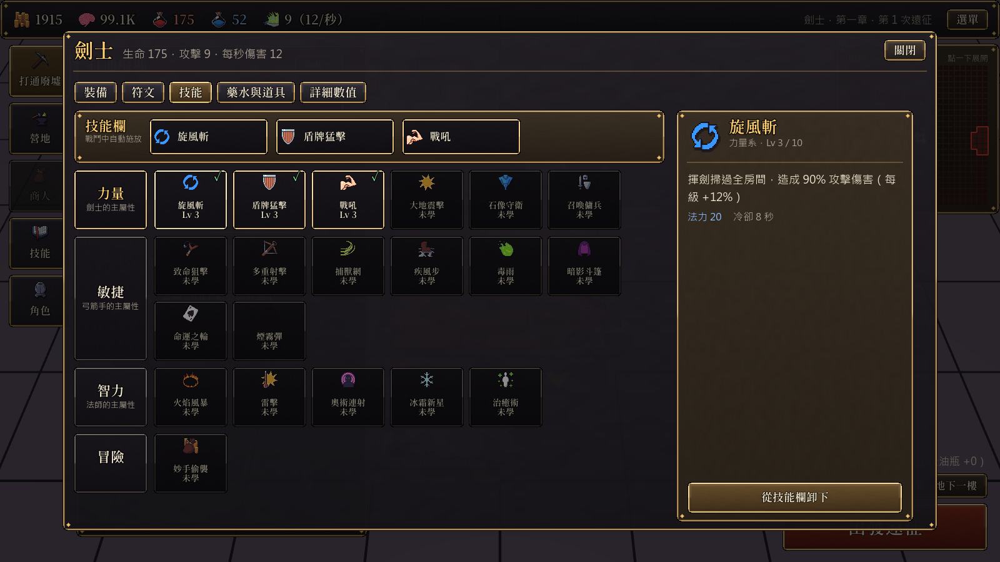
六個部位：。稀有度越高，詞綴越多、符文孔越多。滑鼠停在裝備上會立即顯示和身上裝備的比較。裝備分通用與職業專用（下表「職業」欄），所有裝備每個職業都打得到，但專用裝備只有該職業穿得上。
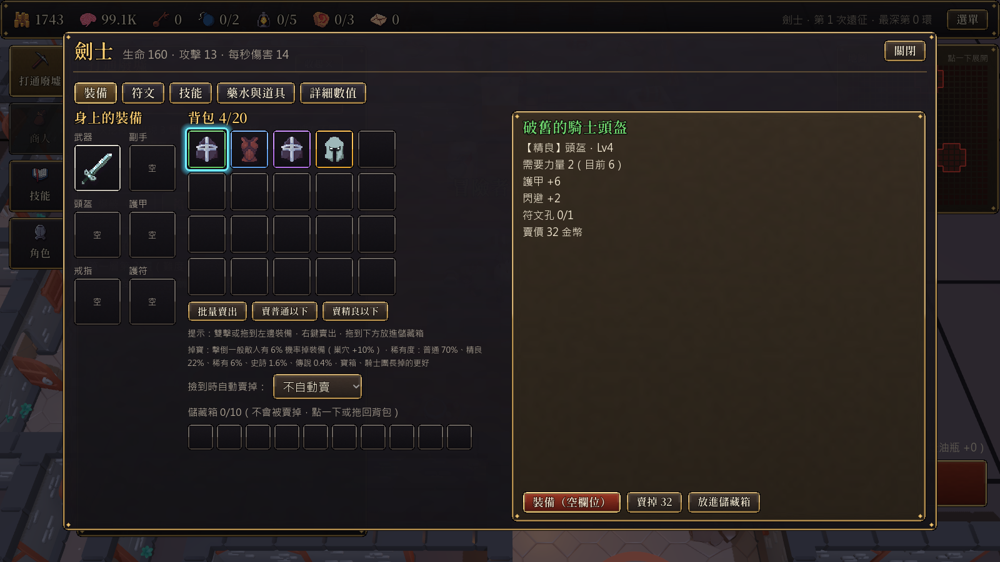
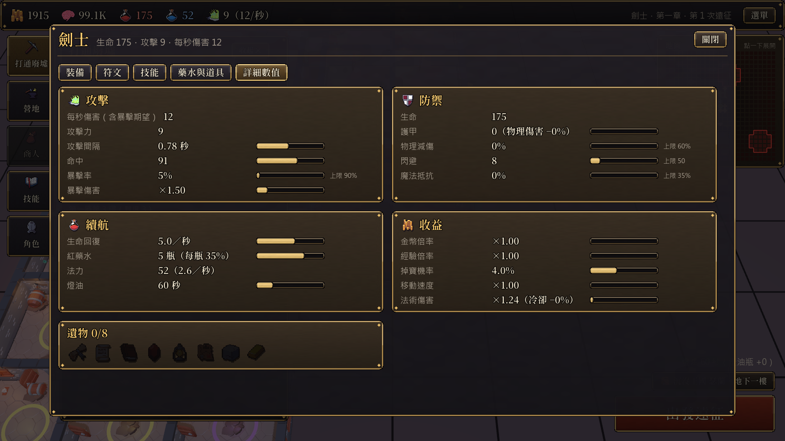
品階：
稀有以上的裝備有機會是套裝。同一套穿越多件效果越強。
參考暗黑破壞神 2 的符文系統：符文共 30 種，編號 1～30，號碼越大越強，也越難取得。每顆符文是一塊刻著發光符印的石板，1～10 號是灰石、11～20 號是藍色板岩、21～30 號是帶金邊的黑曜石；符印顏色代表 6 個系別。嵌在不同部位，效果不同。把符文拖到裝備上就能鑲嵌，花金幣可以取下。裝備圖示下緣的小圓點就是符文孔。
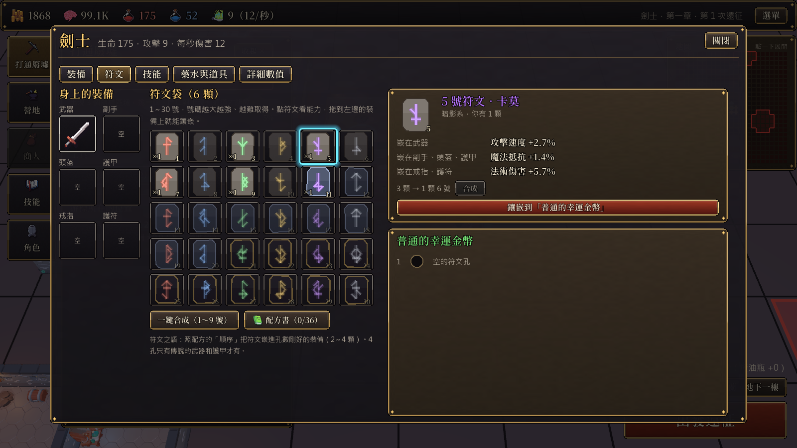
目前最高只會掉到 號，更高號的符文只能合成（之後的章節會一路開放到 30 號）。越外圈掉的號碼越高，但機率越低：例如地下三樓最外圈，掉到 10 號大約只有 1%。
合成：1～20 號 3 顆合成高一號，21 號起 2 顆；10 號起要另外付金幣。符文頁的「一鍵合成」只合成 1～9 號。
舊版的六系五階符文已經全部清空（舊存檔裡的符文、配方都移除了）。
符文之語要把配方裡的符文照順序嵌進孔數剛好相同的裝備：2 顆的配方要 2 孔、3 顆要 3 孔、4 顆要 4 孔（只有傳說品質的武器、護甲才有 4 孔）。用到的符文號碼越高，符文之語越強，配方也越難掉。配方分常見、少見、稀有、傳說四級，靠打怪、開寶箱、打倒頭目低機率撿到；自己湊出正確組合也會自動學會。重複撿到的配方可以在配方書裡賣給商人。
地圖上還沒打通的地方藏著公會地圖上沒有的東西。每一層都預先藏好幾處隱藏地點，地圖上完全看不到；把那一格打通、冒險者第一次走進去才會發現（地圖上會留下一顆金色星星）。其他新蓋的房間也有小機率出現隨機的隱藏地點（冒險技能「尋寶直覺」提高機率）。想全部找齊，就得把每一層都打通。
「塵封的角落」裡藏著收藏品。每組 5 件，收齊一整組有永久獎勵和一段故事：瑟蘭的五位國王、礦工挖出心石的經過、葛倫年輕時的搭檔艾菈，以及一個史書沒有記載的騎士團……「選單 → 收藏品與隱藏地點」可以查看。
右下角的「遠征地點」或「選單 → 世界地圖」會打開一張世界剖面圖：上面是天空、中間是地表、下面是一層層的地底。可以去的地方亮著，點一下再選從哪一層出發；還沒開放的章節是背景，點了可以看介紹。故事路線：第一、二章往地底挖；古龍倒下後王城浮上地表的大湖（第三章），之後往外走到湖畔、霧沼與鄰國帝都，往上爬上觀星塔，最後登上天空。
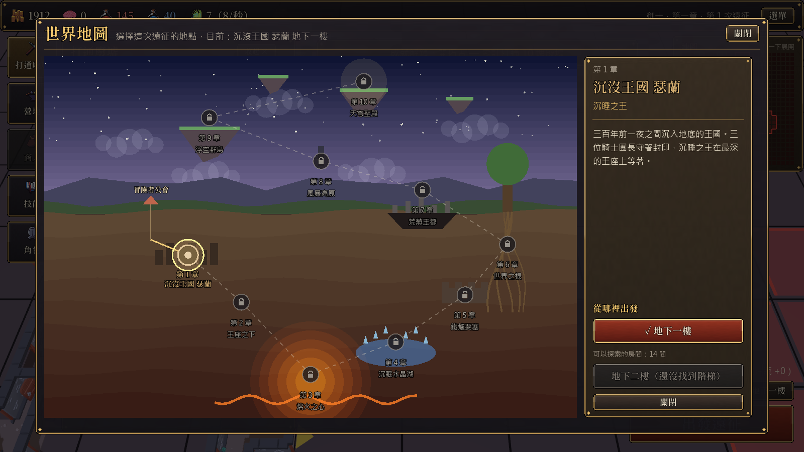
遊戲裡所有跟運氣有關的數字都整理在這裡。沒有任何必掉的設定：就算是頭目、寶箱，也是擲機率；最好的來源也只有 20% 傳說、30% 史詩。
| 來源 | 機率 |
|---|---|
| 一般寶箱 | 2% |
| 封印寶庫的大寶箱 | 10% |
| 騎士團長／元素祭司 | 50% |
| 秘境之王 | 60%（每級秘境嚮導 +10%） |
| 古龍 | 給 3 顆 |
| 打通第一章 | 送 3 顆 |
秘境嚮導每級也讓前四項的機率再乘 1.1 倍。秘境之王掉秘境限定傳說：5%＋每層 0.5%（每級秘境嚮導 +3%）。
封印寶庫的大寶箱、騎士團長、元素祭司、沉睡之王、古龍會給一件還沒找到的遺物（遺物是劇情物品，全部找齊就不再掉）。
| 項目 | 算法 |
|---|---|
| 命中率 | 攻擊方命中 − 對方閃避，最低 15%、最高 97%；摸黑時冒險者的命中再 −35%（技能可減輕） |
| 重擊 | 沉睡之王每 3 次、騎士團長／祭司每 4 次攻擊有 1 次無法閃避 |
| 魔法抵抗 | 每點 1% 機率讓一次魔法攻擊完全無效（上限 35%，對頭目只算一半） |
| 暴擊 | 暴擊率（上限 90%）；暴擊時傷害 × 暴擊傷害 |
| 敵人命中附加狀態 | 每種敵人不同，寫在「敵人圖鑑」（例如骷髏盜賊 25% 流血） |
| 連擊 | 技能「連刺」每級 1.5% 機率多打一下 |
| 命中暈眩 | 技能「盾擊」每級 2% |
| 淬毒箭頭、火焰箭 | 每級 10% 機率施加中毒／燃燒 |
| 碎甲（鈍器） | 20% 機率破甲 1 層 |
| 雙重詠唱、天罰、星辰迴響 | 25%／15%／30% |
| 項目 | 機率 |
|---|---|
| 石室有敵人 | 75%（1 隻起跳，每 3 環多 1 隻，最多 4 隻） |
| 石室有寶箱／聖泉／陷阱 | 12%／8%／12%（陷阱從第 2 環起，陷阱房不會有怪） |
| 走廊有敵人／陷阱 | 25%（第 1 環起）／約 7.5%（第 2 環起） |
| 出現哪種敵人 | 從這一環能出現的敵人裡挑：70% 挑最新的 5 種之一，30% 任選 |
| 異變遠征 | 第 5 次遠征起，每趟 30% 會有異變；有異變時每隻敵人 35% 是異變敵人 |
| 秘境房間 | 石室 1～3 隻敵人，走廊 30% 有 1 隻；石室 25% 帶能力（豐饒、巢穴、試煉、寶藏各 1/4） |
點左側功能列的「營地」建造，一開始就能蓋，不用等商人。每項設施最高 級，價格每升一級 ×。升到 Lv1、Lv4、Lv8 時，營地裡的擺設會跟著升級，從簡陋的帳篷慢慢變成氣派的據點。營地名牌上的 Lv 是所有設施等級的總和。
前五項是直接變強的加成；鐵匠鋪、倉庫、瞭望塔、商隊驛站偏便利，價格比較高，是中後期金幣的去處。第二章之前，營地東南角是擴建預定地，第二章的新設施（煉金台、圖書館、馬廄、小禮拜堂、秘境傳送門）會蓋在那裡。
營地東側的鐵匠布洛克可以強化身上的裝備：每 +1，裝備本身的數值（武器攻擊、護甲、詞綴）+%；符文和傳說特效不受影響。強化等級跟著裝備走，名字前面會顯示 +N。
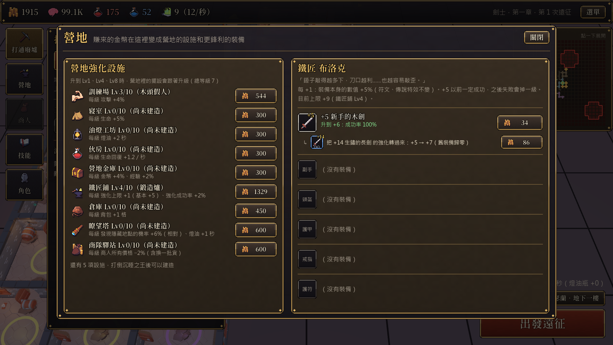
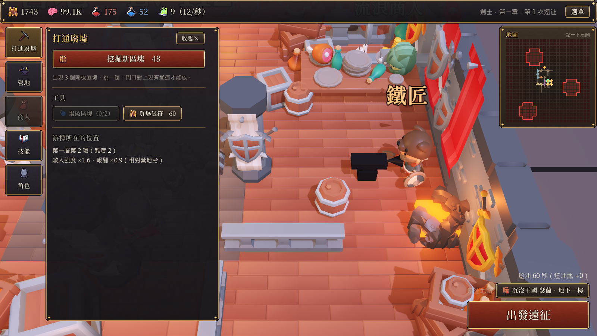
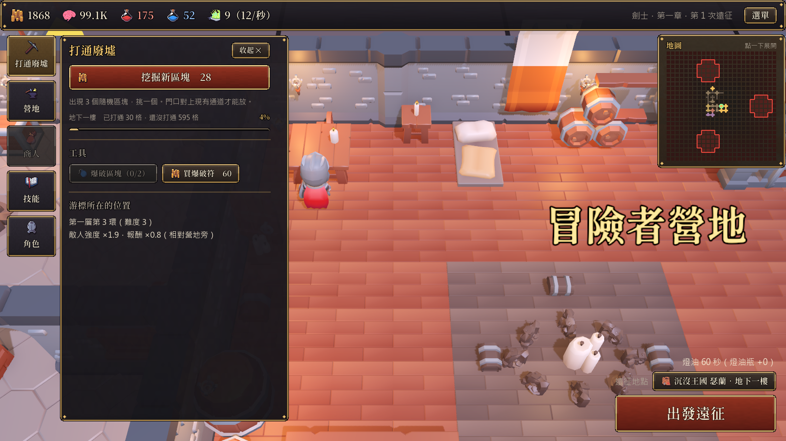
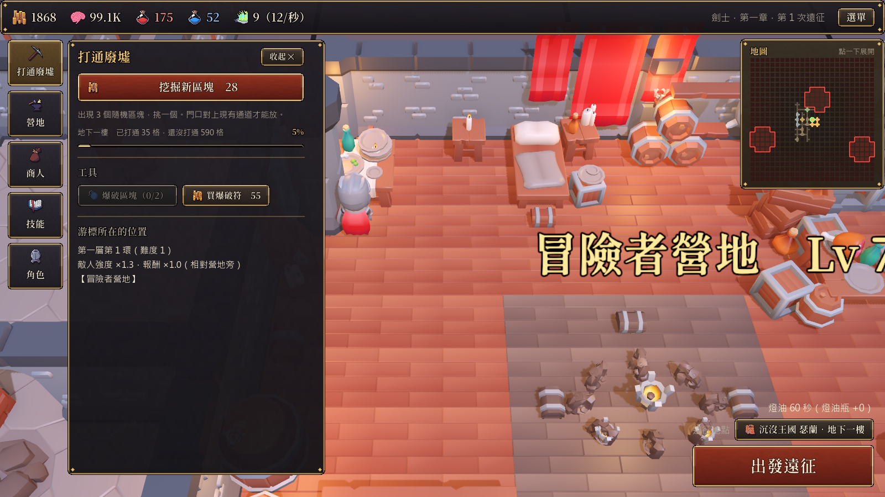
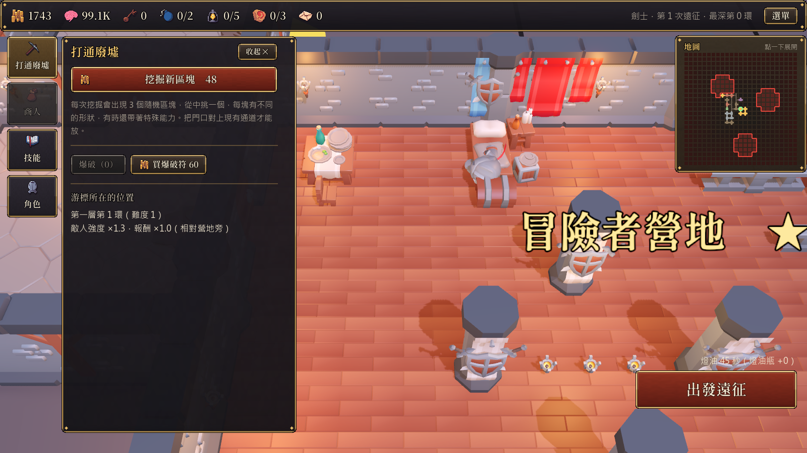
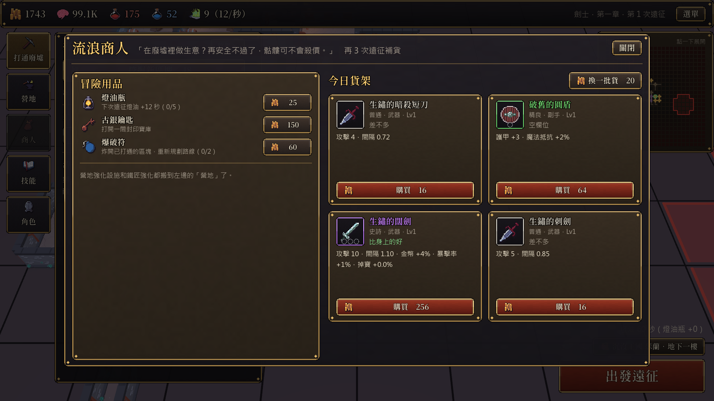
角色視窗分成五個分頁：裝備、符文、技能、藥水與道具、詳細數值，每個分頁的視窗大小都一樣。穿不上的裝備會蓋上一層紅色（職業不符的還會標出職業名稱），點開會寫出原因。頂部資訊列除了金幣、經驗，也會顯示冒險者目前的生命、法力、攻擊。
紅藥水一開始就有。其他藥水要在營地建造煉金台（打倒沉睡之王後開放）來解鎖，煉金台等級越高每趟帶越多瓶。解鎖後在「藥水與道具」分頁選 2 種放進遠征畫面的藥水欄第 2、3 格，會自動喝，也可以點一下立刻喝。
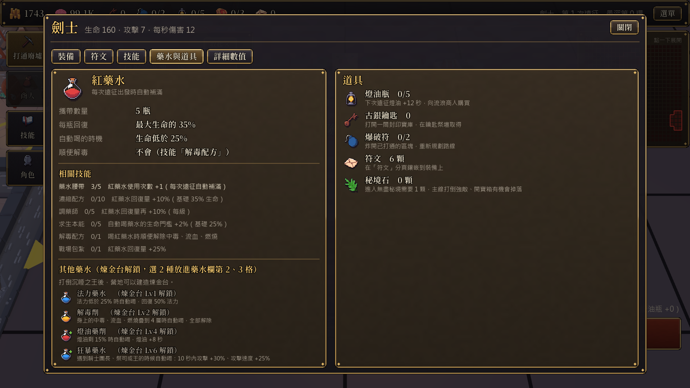
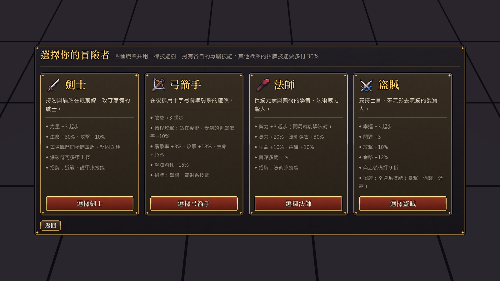
目前完成第一章與第二章，以及通關第一章後開放的無盡秘境（30 層）。世界地圖上已經畫好第 3～10 章的地點，之後的章節會一路往下、再往上擴充。
這一節是開發備忘錄：記錄遊戲裡已經預留好的擴充空間，以及之後想加的內容。想到新點子就加在這裡。
| 想新增 | 改哪裡 | 說明 |
|---|---|---|
| 新章節／新劇情 | data.gd 的 CHAPTERS、LINES、WORLD（填 floors 就能出發）；game_state.gd 的 start_chapter3 | 第三章的做法可以照抄：新樓層在 dungeon.gd 的 FLOOR_X／FLOOR_SIZE／FLOOR_RING_BONUS／FLOOR_NAMES 加一格、加進 BUILD_FLOORS，再補 PIECE_START、FLOOR_REWARDS、FLOOR_SECRETS 同一格；頭目寫在 CAPTAINS 這類字典並合併進 WARDENS，敵人用 ch 標章節（_pick_enemy 依樓層挑）；傳說、套裝、符文之語、遺物、收藏品加 ch 就只在那一章之後掉落。打倒上一章頭目時呼叫開場函式，舊存檔在 load_game 補上。 |
| 第二章以後的難度 | data.gd 的 CH2_* 常數 | 第 22 環以後（地下三樓與秘境）敵人與報酬改用自己的成長率。 |
| 秘境地形／秘境之王 | content_data.gd 的 REALM_TEMPLATES、REALM_KINGS、REALM_UNIQUES | 地形是 10 行字串（# 房間、+ 走廊、S 入口、. 空地）。 |
| 新的主動技能 | data.gd 的 SPELLS＋skills_data.gd 加節點＋run_sim.gd 的 _do_spell | 指定 attr 就會自動套用「非本職業 −25%」規則，也會出現在角色的技能分頁和說明書。 |
| 新的被動技能 | skills_data.gd | 有 fx 的節點不用寫程式（例如 ["atk_pct", 5.0]）。 |
| 新的技能分頁 | skills_data.gd 的 GROUPS | 例如之後新增「神聖」「暗黑」等屬性樹。 |
| 技能樹大改版 | game_state.gd 的 SKILL_VER 加 1 | 讀到舊存檔會自動退還全部經驗，並跳出說明視窗。 |
| 新職業 | data.gd 的 CLASSES＋skills_data.gd 的職業樹 | 需要選一個主屬性（或新增屬性）和角色模型。存檔欄位是 4 格，可以再加。 |
| 新敵人 | content_data.gd 的 MORE_ENEMIES | 設定出沒環數、能力（開戰、命中、低血量、召喚……）。 |
| 新樓層的區塊價格 | data.gd 的 PIECE_START（＋共用的 PIECE_CURVE） | 新樓層只要在 PIECE_START 加一個起始價（約剛到那一層時一趟遠征的收入），漲幅自動沿用共用曲線 PIECE_CURVE（前 25 塊 +9%，第 26～50 塊等量降到 0.8%，之後固定 +0.8%）。存檔裡每層的塊數記在 floor_pieces，陣列會自動補長度。 |
| 新樓層的隱藏獎勵 | data.gd 的 FLOOR_REWARDS | 照樓層順序加一行 {name, desc, fx}，fx 和技能用同一套數值（例如 ["gold_pct", 10.0]）；門檻是 FLOOR_REWARD_PCT（0.9）。說明書表格會自動更新。 |
| 新區塊形狀 | data.gd 的 PIECES | 每格寫種類、位置、門的方向；相鄰格的門要互相對上。 |
| 新區塊能力／特殊房間 | ROOM_MODS／MORE_SPECIAL_PIECES | 能力的效果寫在 run_sim.gd。 |
| 新營地設施 | data.gd 的 RENOS | 加成寫在 hero_stats，外觀寫在 world.gd 的 _decorate_camp。 |
| 新裝備／傳說／套裝 | content_data.gd | WEAPON_BASES、ARMOR_BASES、UNIQUES、SET_PIECES。 |
| 新符文／符文之語 | STICKERS／COMBOS | 符文圖示會依顏色自動畫出來。 |
| 新藥水 | data.gd 的 POTIONS＋run_sim.gd 的 use_potion、_auto_potions | 設定煉金台解鎖等級，角色視窗與遠征藥水欄會自動出現。 |
| 新遺物、成就 | RELICS／ACHIEVEMENTS | 遺物可以帶劇情文字（lore）。 |
| 難度曲線、遊戲長度 | data.gd 的「難度曲線」常數 | EARLY_*（前期）、LATE_*（中後期成長）、REWARD_MULT（整體報酬，越低遊戲越長）、ENEMY_HP_MULT、CELL_TIME、BASE_BATTERY。改完跑 tests/balance_report.sh（四職業 × 九張地圖，約 3 小時）確認通關時間與職業差距。 |
| 國王戰、防卡關 | run_sim.gd 的 BOSS_WEAR_*、game_state.gd 的 GRIT_* | 國王傷勢保留比例與上限；不屈之志的層數與每層加成。 |
| 技能欄格數 | data.gd 的 LOADOUT_MAX | 目前 3 格，之後可以做成技能或設施解鎖第 4 格。 |
第一、二章往地底挖；從第三章開始不再往下挖，古龍倒下後瑟蘭從湖底浮上地面，冒險改成往外、往上、往天空走。每一章換一種舞台和一種新玩法，主線一路解開三個謎：瑟蘭為什麼沉沒？秘境的傳送門是誰留下的？葛倫到底是誰？
三百年前，瑟蘭的小王子萊恩染上不治之症。女王艾莉希雅不願失去兒子，向夜空中一個古老的存在──星瞳 默瑟拉──許願。王子活了下來，代價是瑟蘭成為星瞳在人間的「眼巢」：王子成了它的容器，整個王國會慢慢被它的視線吞沒。
國王瓦爾克發現後做了一個決定：用古龍伊格尼斯的心火把整個王國拖進地底，讓星星再也看不到瑟蘭。他自己沉睡化為封印，三位騎士團長和四位祭司負責看守。女王則帶著秘密逃出了王國。
玩家在第一、二章打倒瓦爾克和古龍，等於親手解開了這層保護──瑟蘭浮出水面，星瞳再次睜開了眼睛。秘境的傳送門，就是星瞳伸進人間的「睫毛」。
| 角色 | 表面身分 | 真相 |
|---|---|---|
| 老嚮導 葛倫 | 冒險者營地的嚮導，什麼都知道一點 | 三百年前王子萊恩的老師兼護衛。瓦爾克把王冠上的寶石「沉睡之心」做成長明提燈交給他，提燈讓他不老不死，也讓持燈的人躲過星瞳的視線（所以遠征一定要點燈）。第八章揭曉。 |
| 女王 艾莉希雅 | 史書上「與王國一同沉沒」的王后 | 化名白鴉國師，在鄰國白鴉帝國當了三百年的國師，一直在等瑟蘭浮起來、把兒子要回來。 |
| 無眠王子 萊恩 | 傳說中夭折的小王子 | 星瞳的容器，三百年沒有睡過覺。是敵人，也是最後可以救回來的人。 |
| 星瞳 默瑟拉 | 秘境深處的「巨眼統領」 | 夜空中的古老存在，最終頭目。秘境裡的巨眼統領只是它的一隻影子。 |
打通瑟蘭廢墟的地下一、二樓，擊敗三位騎士團長，讓沉睡之王瓦爾克安息。
王座下的地下三樓，擊敗四元素祭司與古龍伊格尼斯。結尾的疑問：「秘境的傳送門是誰留下的？」
劇情：古龍的心火熄滅，瑟蘭整座王城從地底升起，浮出一片大湖。湖面上冒出許多小島和半沉的街道，三百年前睡著的居民也醒了。一群叫拾骨者的盜掘團搭船而來，想搶光王國的寶藏。
舞台：湖上群島（37×37），地圖往四面八方展開，不再往下挖；蓋在水上的區塊是木棧橋。
新玩法：漂流浮島（限時漂來的寶物小島，接上就變成陸地）、重建浮城（救回居民解鎖新設施，營地長成小鎮）、追擊掠奪船（頭目的船會在碼頭之間移動）。
頭目：三位拾骨者船長，以及首領「鐵鉤」巴爾托與他的掠奪船。
伏筆：巴爾托的藏寶圖上，蓋著白鴉帝國的印章。是誰把瑟蘭的位置告訴帝國的？
劇情：鄰國白鴉帝國派使節團來到湖畔，宣稱瑟蘭是「無主之地」，要公會交出王城。公會和使節談判，也和帝國的騎士比武。
舞台：王城外城的街區，區塊變成街道、廣場和房屋。
新玩法：抉擇事件：遠征途中遇到難民、商人、帝國士兵，你的選擇會影響報酬、名聲和之後的同伴。
頭目：帝國審判長 艾德溫（一對一決鬥，打贏換來帝國暫時退兵）。
伏筆：在使節團的文件裡發現一個名字──帝國國師的本名，竟然是「艾莉希雅」，和三百年前沉沒的王后同名。
劇情：王城外的濃霧裡住著一群瑟蘭遺民，他們的祖先當年沒來得及跟著王國沉下去。遺民不信任外人，但霧沼裡的魔物越來越多，他們需要幫手。
舞台：霧沼，視野極差，提燈的光圈大小變得非常重要。
新玩法：同伴系統：遺民的獵人、治療師、鐵匠可以加入隊伍一起遠征，各有被動能力；救出的冒險者也能留在營地。
頭目：霧沼魔女 蘿溫──當年女王的貼身侍女。
真相第一塊：蘿溫臨死前說出王子生病、女王向星星許願的往事，以及「國王把王國沉下去，是為了不讓星星看見」。
劇情：湖心升起一座三百年前就被封住的觀星塔，塔頂傳來小孩的笑聲。這裡是女王當年許願的地方。
舞台：往上爬的高塔，每一層是一間會旋轉的大廳。
新玩法：星座拼圖：把區塊排成特定星座的形狀，會打開隱藏房間、拿到星座祝福。
頭目：無眠王子 萊恩（第一戰）。他打不死，最後穿過一道秘境傳送門逃走。
真相第二塊：秘境的傳送門是星瞳伸進人間的「睫毛」，王子就是它的眼睛。第二章的疑問在這裡解答。
劇情：追著王子的線索，冒險者潛入白鴉帝國的首都。皇帝已經好幾年沒有露面，整個帝國其實由「白鴉國師」掌控。
舞台：夜晚的帝都，有巡邏的衛兵和鐘樓。
新玩法：每趟遠征只有一個夜晚（天亮前要撤退）；開放手動施放技能，在關鍵時機放技能可以打得更快。
頭目：白鴉國師──正是女王艾莉希雅本人。戰鬥打到一半，她撕開天空逃走了。
伏筆：女王看見葛倫時愣住了，叫了一聲「葛倫老師？」。葛倫什麼也沒解釋。
劇情：天空被撕開後裂成碎片，大塊大塊的陸地浮在半空。秘境開始和現實世界融合，怪物從天上掉下來。
舞台：浮空群島，要在島和島之間架橋，風向會改變能走的路。
新玩法：主線地圖也會出現秘境詞綴（敵人加速、燈油減半、寶箱加倍……），每次遠征的條件都不同。
頭目：天裂使徒（星瞳的三位使者，一場三階段的戰鬥）。
真相第三塊：葛倫說出自己的身分──三百年前王子的老師。他手上的長明提燈是瓦爾克的王冠寶石「沉睡之心」，是它讓葛倫活了三百年，也是它讓冒險者在星瞳的注視下還能行動。
劇情：星瞳開始把星星砸向剛浮起的瑟蘭。王城撐不了太久，冒險者必須守住城市，直到找到通往星瞳的路。
舞台：浮城王都，整章以防守為主。
新玩法：大型守城戰。之前打倒的敵人回來幫忙：三位騎士團長的英靈、四位元素祭司、遺民同伴，還有第四章選擇友好時的帝國騎士。
頭目：無眠王子 萊恩（第二戰）。打倒他之後要做一個選擇：喚醒（用提燈的光讓王子睡著，救回他）或斬斷（徹底切斷他和星瞳的連結）。選擇會影響結局。
劇情：通往星瞳的路在天空的最高處──一口倒過來的「天空之井」。冒險者帶著所有同伴，走進星瞳的眼睛裡。
舞台：上下顛倒的星空迷宮，天花板才是地面。
新玩法：星瞳會熄滅你的提燈，戰鬥在完全的黑暗中進行，只能靠同伴和技能的光照路。
最終頭目：星瞳 默瑟拉（多階段，最後一階段要靠長明提燈重新點亮才能打倒）。
結局：星瞳倒下前，女王艾莉希雅擋在冒險者前面，用自己當鑰匙把星瞳的眼睛永遠閉上，三百年前的許願由她親手了結。瑟蘭在陽光下重建：選了「喚醒」的話，萊恩醒來、成為新的國王；選了「斬斷」的話，公會和遺民共同治理王國。長明提燈的光慢慢熄滅，葛倫終於開始變老，他把提燈交給你，笑著說：「隊長，這次換你帶路了。」
製作人員名單之後的一幕：你手上已經熄滅的長明提燈，自己又亮了起來，火焰是陌生的藍色。夜空裡，在星瞳原本的位置旁邊，六隻新的眼睛同時睜開。提燈裡傳出星瞳最後的聲音：「瑟蘭……只是第一個。」
也就是說：世界上還有六座和瑟蘭一樣「為了躲星星而沉睡」的王國。這可以作為第二部的主線，秘境也會繼續開放，第 30 層以後出現新的大門。
救出的冒險者在營地留下對話、委託；遺物收集滿一套解鎖一段過去的故事（例如女王的日記、葛倫年輕時的信），補完三百年前發生的事。
括號裡是預定在哪一章加入；沒標的是還沒排進主線的點子。
走到特定房間跳出小事件：要不要喝下可疑的藥水、要不要救被困的冒險者、跟商人賭一把。選擇會影響這趟的收穫或風險。
反過來的玩法：怪物會從深處往營地進攻，玩家用打通的區塊排出防線、放陷阱和衛兵，守住營地拿獎勵。
救出的冒險者可以留在營地成為同伴，一起遠征；也可以收服小怪當寵物（每種有被動能力）。
每週固定一張地圖和異變，比誰用最少次遠征打倒頭目；秘境最高層數排行。
技能欄可以切換成手動施放：在頭目重擊前放護盾、在怪物聚集時放範圍技，讓會操作的人打得更快。
特定形狀的區塊排成圖案（例如十字、環形）會觸發獎勵房，讓建造不只是鋪路。
聖騎士（新屬性「信仰」：治療與護盾）、死靈術士（召喚骷髏大軍）。KayKit 角色包還有 Barbarian 模型可用。
做成第五章（同伴加入）的獎勵或秘境第 30 層的成就獎勵。
每層秘境隨機附加 1～2 個詞綴（敵人加速、燈油減半、寶箱加倍……），越難的組合獎勵越好。
把某一層的空地全部蓋滿，就給那一層永久獎勵（例如該層敵人掉落 +20%、燈油消耗減半、解鎖該層專屬遺物），讓「最外圈很貴」變成值得挑戰的長期目標，也讓第二章回頭補地下一、二樓有理由。
先在空地上「預約」想蓋的形狀與方向，錢夠了自動買下最符合的區塊並放好；適合想一環一環慢慢蓋、又不想每趟都手動挑的玩家。
新的營地設施或技能：爆破時退還一部分當初的價格，或把已經蓋好的區塊旋轉／搬到別處（花一點錢），修正早期蓋歪、門口對不上的地方。
建造分頁顯示每一層「已蓋／可蓋」的塊數、下一塊價格、最近 10 趟的平均收入，以及大約還要幾趟才買得起，讓玩家自己規劃擴建速度。
把存檔匯出成一串文字或檔案，換電腦或手機時匯入；也方便回報問題時附上存檔。
保存最近幾趟遠征的路線、受傷與死因，結束後可以快轉回看，幫玩家判斷該補裝備、技能還是改路線標記。
自訂按鍵、色盲友善的門口／稀有度配色、字體大小與畫面震動開關。
更新說明書：改完遊戲後執行遊戲資料夾裡的 更新說明書.bat，圖片與資料會重新匯出，這份說明書自動同步（這一節是手寫的，請直接編輯 docs/遊戲說明書.html）。